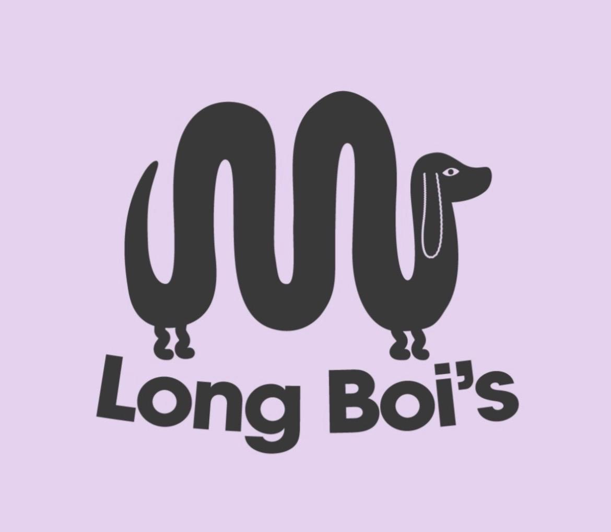
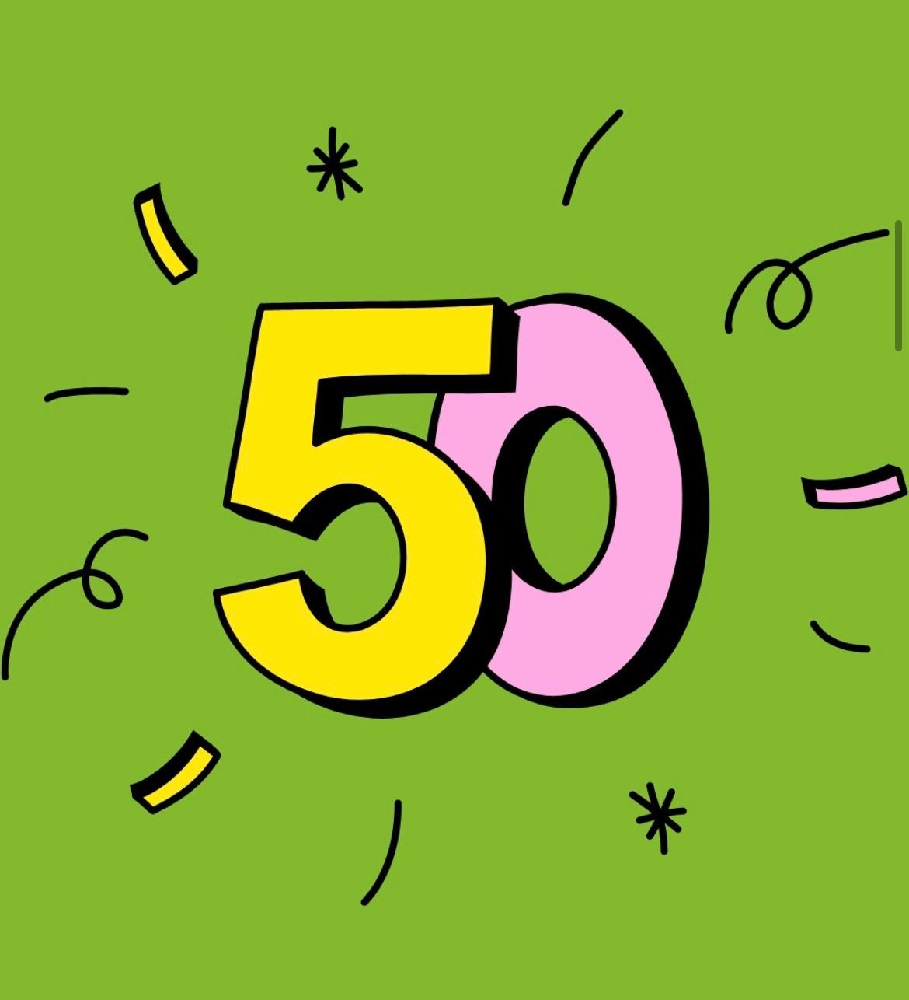

Hello Members of Chorlton Bikes,
Welcome to the first newsletter of our newly formed Community Benefit Society – Chorlton Bikes. Each month we will endeavour to provide updates on our services, riders, partners, events, future plans and much more!
January 2026
As we move through January, there's been a huge amount to celebrate across the organisation. From securing important contracts to growing community partnerships, here are some of the standout successes from the past few weeks.
🚲 Significant Contract News

- We have officially been approved by the compliance department at the University of Manchester. This means we will shortly be providing transport for samples from Wythenshawe hospital to the university for research purposes. It should also mean that we are able to bid for future courier work with the university.
- We are waiting to hear whether we have been successful to secure the NHS Transport contract – watch this space!
🤝 New Work & Partnerships
- We are delighted that we have partnered with Long Boi's Bakehouse in Levenshulme to transport their lovely bakes to cafés around Didsbury and Withington on Wednesdays and Saturdays.
- Following a very positive presentation from Tom to Chorlton Civic Society about our work, we submitted a quote to one of their members (who helps to coordinate Chorlton Arts Festival) to deliver 12,781 brochures for the Chorlton Arts Festival. This is now with their committee for approval.
- We gained 2 new shop-and-drop customers – supporting more vulnerable members of the community through this service with the Unicorn.
- We had a productive meeting with Dave from Brewcycle who are based at M.U.D. (St Margaret's – Brantingham Rd) to continue their worm focused composting initiative, using coffee ground collections from our rider, Travis. We also discussed potential pathways into employment or volunteering with CB for people on probation and looking to gain new skills and routes back into employment.
🌍 Community & Outreach

- We are committed to hosting another Community Ride in 2026 following the success of our celebration of the cycleways and young cyclists in 2025. We have made contact with local councillors and hope to hold an initial planning meeting in February. Please get in touch if you would like to be involved in this!
- One of our trishaws is on loan with Stretford Public Hall and we are currently working on establishing a pilot group to take trishaw rides for their community groups. If this sounds like something you'd like to volunteer for, please get in touch!
- The other trishaw previously based at St Margarets is now homed at Boiler House and we are liaising with the pilot group to continue their great work with Together Dementia at Alexandra Park.
- In January, we moved 23 bikes to support Bikes4Refugees. This often involves saving bikes from landfill and then our legendary mechanic Dave works his magic to produce decent bikes which are allocated by Lucy at Bikes4Refugees.
- We continue to collect donations from local residents for Care UK and Reach Out To The Community.
💛 Membership, Donations & Support
- Membership continues to grow strongly. We are now up to 52 members but always looking to grow our community of supporters, riders and volunteers. If you know anyone who might like to join our £1 membership or make a one-off or regular donation to become a Friend of Chorlton Bikes, please direct them to our website www.chorltonbikes.coop for more information.
- We now have a tandem to hire for free! Get in touch if you'd like to hire it or refer a friend who might be interested!
- All TFGM Bike Library Brompton loans are out, showing strong demand and continuing to provide a free service for local people who need a short term bike loan.
🌟 People & Appreciation

- We have inducted new riders Reuben, Alex and Rob – welcome to the team!
- A heartfelt thank you to Ali S for 5 years of riding with us and supporting our commercial and community work – especially volunteering for the food bank collection of food surplus from local supermarkets in recent years. She is moving out of area but we are hoping to still see her at future CB events!
Thank you to everyone for the energy, care, and commitment that's driving all of this forward. January has set a strong tone for the year ahead — and there's plenty more to come.
🚴♀️💚